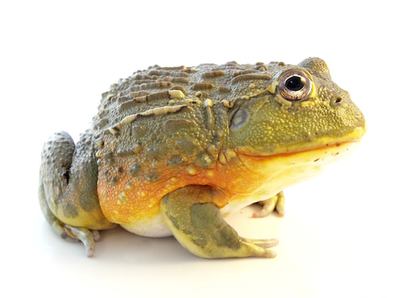

|
What you need for the habitat:
- Terrarium - You should have a terrarium that is around at least 18"L x 18"W x 24"H. This is ideal for two or three frogs. If you are only going to be having one or two a 12"L x 12"W x 18"H but that does not give them much room to move around. This should be about a 20 gallon tank.
- Substrate - An ABG mix is recommeneded for bioactive vviarium setups. This substrate will provide all the nutrients that live plants will need. If you are not going to be having live plants than you can have a coco-husk substrate instead. You should be genrous with the amount of sunsatrte that you put in the terrarium because Pixie Frogs like to burrow. In an ideal world your frog would be able to cconceal itself below the substrate.
- Drainage Layer - A drainage layer is optional. A drainage layer will be need if you plan on having a waterfall feature. Other wise this is not needed.
- Plants and Decorations - Plants are a must when it comes to a tree frog enclosure. You will also need to make sure that you have branches in your enclosure so that your tree frog has plently of things to climb. You need a decent amount of plants so that your tree frog has plenty of hiding spaces.
- Misting system - A misting system is recommened to keep the humidity in the recommened range.
- Day Lights and Night Lights - A UVB light isn't required but in low doses it won't hurt your tree frog. The most important thing to remember is to make sure to have a day and night cycle for your tree frog. There will need to be around 12 hours of day light and 12 hours of night. You might want to consider a LED grow light or a small T5 for live plants.
- Heating - A heat lamp is neccassary to keep the temperature gradient in the enclosure. A theromostate is also recommended to help regulate the temperature and prevent overheating. The lights linked above should be suffencinet in heating the terrarium.
- Thermometer/Hygrometer - You need both of these in order to keep track of the temparature and the humidity. It is recommend to have one near the top and one near the bottom.
- Water Dish - Even though Pixie Frogs spend most of their time on land a decent sized wayer dish is still neccesary.
What to feed your Pixie Frog:
- Crickets- dusted with vitamns and minerals to help keep the frog healthy.
- Dubia Roaches
- Waxworms and Horned Worms
- You will also need to make sure gut-load the mealworms. To do this you just place about 1-2 inches of the calcium into the meal worm container. Let them feed on it for 48 hours then feed to your frog.
- Locusts
- You should your frog daily when they are young, but when they are adults about every 2-3 days.
- When feeding your frog you should start with feeding thme about 2-3 insects. If all of the insects are eaten within an hour of feeding then you can give frog 3-4 insecst the next time.
|
Where to get your Pixie Frog:

How long Pixie Frogs live:
Pixie Frogs live for about 12 to 20 years.
Total Cost of buying a Pixie Frog:
How to handle your Pixie Frog:
When handling your Pixie Frog you should always wash your hands and wear gloves before taking it out of its terrarium. You should not take your frog out of their terrarium for more than 15-20 minutes at a time. You can take it out for 15-20 minutes at a time 2-3 times a week. More than that is not recommended. When handling your frog be careful to not drop it on the floor or let it hope out of your hand from a high height as the can cause injuries. Pixie Frogs genrally do like to be handled and because of their eating habits you might get bitten.
Fun Facts about Pixie Frogs:
- 2nd largest frog in the world
- Reach sizes up to 10" and up to 2lbs
- Also reffered to as African Bull Frogs
|